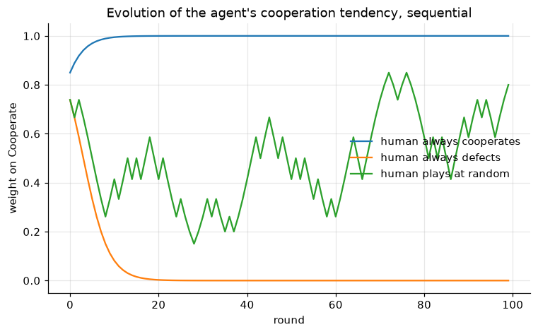
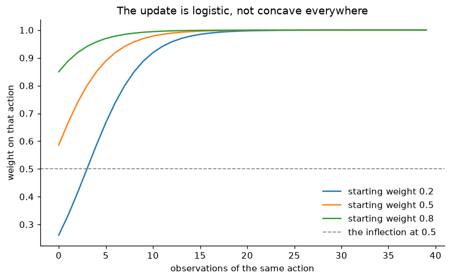

A research internship at GAEL, January to April 2025.
In repeated price competition, human players tend to converge on tacitly collusive prices rather than on the competitive equilibrium. Whether algorithms sustain that behaviour, break it, or intensify it is an open question in industrial economics, and one with direct consequences for competition policy. Supervised by Alexis Garapin (UGA) and Olivier Bonroy (INRAE) at the Grenoble Applied Economics Laboratory.
The internship did not settle the question. What it produced is below, with the numbers it actually reached.
Tit-for-Tat without anyone programming it


Mirror neurons fire both when you act and when you watch someone else act, which makes them a plausible substrate for imitation. The agent is that idea at its simplest: observing an action multiplies its weight and renormalises. Nothing tells it to reciprocate.
Two layers. Everything the internship submitted in May 2025 is preserved in
original/ byte for byte, including what is wrong with it, which
that folder records rather than quietly repairing.
The internship ended in April 2025. The piece above was redone afterwards,
in my own time, because it was not finished: the simulation could not be run
from top to bottom. It sits beside original/ rather than over
it, and does not overturn what the internship concluded. What changed is
that the claims the code does not support are named, and the figures carry
the labels they were computing and throwing away.
An equilibrium analysis used to sit here too. It went with the Prolog course project whose game it is about, in University-Coursework. That game does not appear in the internship report.